Как читать авторский курс и нормативные материалы
Это учебные материалы, а не заключение о соответствии конкретного продукта. Организационные модели курса отделяйте от терминов стандарта: ППК в опубликованном проекте — машиночитаемый перечень, а живой реестр его версий является практикой сопровождения. Термин OSA в разных материалах имеет разный охват. Статус и обязательность нормативного документа проверяются отдельно; проект КАПО опубликован как проект первой редакции.
М11. Корпоративный кейс: генератор фактов и сервис вердиктов
Назначение
Это центральный кейс курса. Все приёмы предыдущих модулей (C/C++ legacy, ELF, маппинг библиотек, поставка от соисполнителей) собираются здесь в один работающий конвейер из двух обезличенных сервисов Организации:
- Генератор фактов (enrichment-утилита) — превращает сырой артефакт соисполнителя (cdxgen-SBOM + ELF-бинарники) в обогащённый, валидный CycloneDX. Только факты, никаких суждений.
- Сервис аудита/вердиктов — принимает обогащённый SBOM, прогоняет его через юридический и уязвимостный workflow, выпускает вердикты и собирает readiness релиза.
Главная мысль модуля — граница между ФАКТАМИ и РЕШЕНИЯМИ. Один сервис не имеет права выносить вердикт; другой не имеет права дописывать состав. Это разделение и делает аудит воспроизводимым.
Карта потока (mini)

Ключевые понятия
sbom enrichment · CycloneDX-first · факты vs решения · legal verdict · VDR · readiness
Нормативная опора
NIST SP 800-218 SSDF (PS.3.2, RV.1) · ГОСТ Р 56939-2024 · БДУ ФСТЭК · CycloneDX ECMA-424 · OWASP SCVS
Материалы модуля
- 01 Конспект — архитектура двух сервисов, граница «факты/решения», полный пайплайн.
- 02 План занятия — тайминг лекции, демо и ПЗ.
- 03 Практическая работа — прогнать артефакт через обе стадии и собрать readiness.
- 04 Контрольные вопросы — контроль + кейс-задачи на границу ответственности.
- 05 Что проверять на проекте — чек-лист аудитора по разделению контуров.
Смежные модули и практики
- М09. C/C++ legacy — откуда берётся ELF-анализ внутри генератора фактов.
- М10. Много исполнителей — как устроен вход конвейера (поставка артефактов).
- П28. Поставка от нескольких исполнителей
- П29. Readiness dashboard
Практический результат
Уметь нарисовать и защитить полный конвейер Организации: артефакт соисполнителя → обогащение (факты) → артефакт-репозиторий → аудит/вердикты → Dependency-Track (VDR) → readiness; и для каждой стрелки назвать, кто отвечает и чем это подтверждается на аудите.